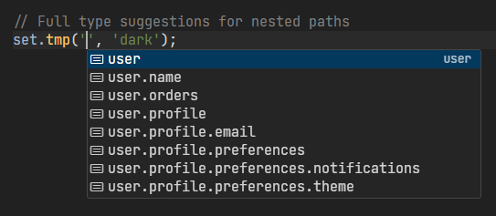

Why useStatePro?
Temporary State
Maintain a temporary state that can be discarded or merged with the original state, perfect for forms and edit UIs.
Smart Type Inference
Automatic TypeScript suggestions for nested paths without manual interface definitions.
Nested Objects
Deep nested object access with full type safety and autocomplete.
Installation
npm install use-state-proyarn add use-state-proUsage Examples
Basic Usage
import useStatePro from 'use-state-pro';
function UserForm({ user }) {
const { tmp, org, changed, set, discard, merge } = useStatePro(user);
const handleSave = () => {
// Save to API then merge changes
merge();
};
return (
<div>
<input
value={tmp.name}
onChange={e => set.tmp('name', e.target.value)}
/>
<input
value={tmp.email}
onChange={e => set.tmp('email', e.target.value)}
/>
{changed && (
<div>
<button onClick={discard}>Discard</button>
<button onClick={handleSave}>Save</button>
</div>
)}
</div>
);
}Automatic Type Inference
const { tmp, set, get } = useStatePro({
user: {
name: 'John',
profile: {
email: 'john@example.com',
preferences: {
theme: 'light',
notifications: true
}
},
orders: [
{ id: 1, total: 100 },
{ id: 2, total: 200 }
]
}
});
// Get nested value
const theme = tmp.user.profile.preferences.theme;
// Full type suggestions for nested paths
set.tmp('user.profile.preferences.theme', 'dark');
// Functional updates also supported
set.tmp('user.orders', items => [...items, { id: 3, total: 300 }]);

API Reference
Return Values
| Property | Type | Description |
|---|---|---|
| tmp | T | The temporary state object |
| org | T | The original state object |
| changed | boolean | True if tmp differs from org |
| set.tmp | function | Setter for temporary state (supports dot notation and functional updates) |
| set.org | function | Setter for original state (supports dot notation and functional updates) |
| get.tmp | function | Getter for temporary state (supports dot notation) |
| get.org | function | Getter for original state (supports dot notation) |
| discard | function | Reset tmp to match org |
| merge | function | Copy tmp to org |